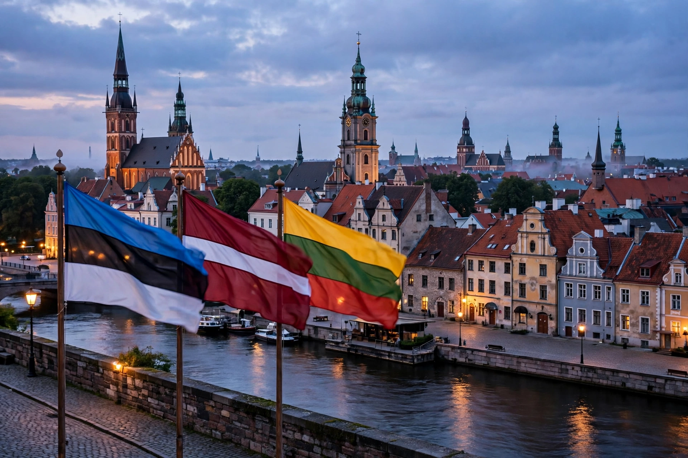

[Image placeholder: The Baltic Way human chain, 1989 (reenactment view of a Baltic old town skyline)]The **Baltic states** (or Baltic countries) are the three sovereign states of Estonia, Latvia and Lithuania on the eastern shore of the Baltic Sea in Northern Europe. Together they cover about 175,000 km² with a combined population of roughly 6 million. All three are members of the European Union, NATO and the eurozone (Estonia adopted the euro in 2011, Latvia in 2014, Lithuania in 2015).
The three share a twentieth-century arc: independence from the Russian Empire in 1918, annexation by the Soviet Union in 1940 (with a Nazi occupation interlude), deportations and guerrilla resistance, and the 'Singing Revolution' that restored independence in 1990–91 — symbolised by the Baltic Way, a 600 km human chain of about two million people on 23 August 1989. Their politics since have centred on integration with the West and vigilance toward Russia, sharply intensified after Russia's 2022 invasion of Ukraine.
Despite the grouping, the three differ: Estonians are Finnic and Lutheran-influenced, Latvians and Lithuanians are Baltic peoples (Lithuania largely Catholic, Latvia mixed), and their languages differ (Lithuanian and Latvian are the only living Baltic languages). Each state also has a significant Russian-speaking minority, largest in Latvia and Estonia.